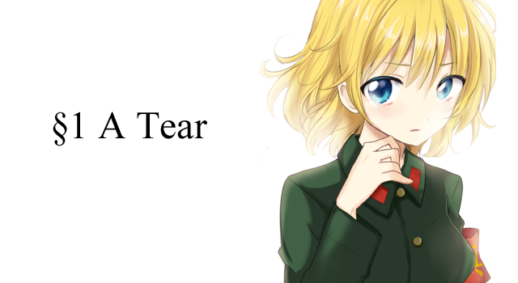

――３
さん、すりー、みっつ。
不思議な数字だと藤白は思う。１は単純で力強い。２は調和がとれていて美しい。だが３は……、まるでふらふらと持ちこたえる天秤のように危うく今にも崩れ落ちてしまいそうな気がしてならない。理由は分からない。だがそれは数を数えるという行為を知ってからずっと持ち続けてきた感覚だ。
たとえば１÷３は割り切れない。たとえば攻守の切り替わる野球のスリーアウト。なかなか起こらないハットトリック。一人称でも二人称でもない三人称。対角線の引けない三角形。第三惑星にだけ発生した生命。そういえば物理の教師が言っていた。物理では物の数が三つ以上になると問題が正確に解けなくなってしまうのだと。世界は「ひとつ、ふたつ、たくさん」なのだと。
だからそんな危うい数が扉を開く鍵だと偶然に知った時はとても驚いた。
ここ党立真揺高校の、屋上へと繋がる非常階段。ひと気のない西棟の外縁にひっそりと立てられた背の高い鉄製の囲い。四階から屋上へと向かう部分には、生徒の立ち入りを禁じるための分厚い扉が設けられている。
ちょうど一週間ほど前のことである。私生活上のちょっとした問題に悩んでた藤白貴和は人の居ない場所を探してここに辿り着き、なんとかして屋上に出られないものかと暗証番号を片っ端から押してみたところ見事当たりを引き当ててしまったのだ。
とは言っても本気で解錠しようと思ったわけではない。藤白のやったことはただぼうっと何も考えず、ボタンを００００から順に押していただけだ。遠い眼差しで白痴のように総当たり攻撃をしかける自分。傍から見ればさぞ不気味な光景だっただろう。だがそんなことを十分も十五分も続けている内に鍵はあっけなく開いてしまい、そしてそのロックを外す番号が……０３２７だったのだ。
後々考えてみればなんてことはない。０３２７……つまり三月二十七日。学校の創立記念日である。しかし、無心でボタンを押していたただけの藤白にとってその０３２７という数字はまた別の意味を持ったものに思えてならなかった。すなわち０３と２７。『３』と『３の３乗』である。
そして藤白は今日もこの扉の前にやってきた。
あれ以来何か嫌なことがあったり、一人で考え事をしたいときは絶対にこの場所へ来ようと決めていた。なぜなら藤白にはこの扉を開けた先の空間が、３という今にも折れてしまいそうな鍵を使ってようやく辿り着ける場所が、まるでこの世ならざる世界のように思えてならなかったからだ。人の居ない空間。日常という安定した世界の中に空いた虫食い穴のような異世界。嫌なことを忘れたり、考え事をするには持ってこいである。
――カズくんってロマンチストだよね。
不意に、幼なじみから言われた言葉が脳裏をよぎり藤白は苦笑した。
いくら屋上が普段から立ち入りを禁じられている場所だとはいえ異世界はさすがに言い過ぎだと自分でも思う。教師連中は普通に出入りできるのだし、生徒会だか何とか委員会だかの連中が所用で登っているのも何度か目にした。あのとき彼らはみんな異世界に行っていたとでも言うのか？ そもそも０３２７を３と３の３乗に分解するのが恣意的だし、もっと言えば３という数字にそういう呪術的な意味を見出すこと自体がたぶん非科学的なのだろう。数学はそこまで得意ではないけれど、３が単なる数字の一つでしかないことは藤白にだってよく分かる。同じようなこじつけはきっと１とか２とか他の多くの数にだって可能であるはずだ。
（ロマンチスト……か。まあ自覚はあったけどな）
そんなセリフを頭で唱えてみても、自分の感覚は頑として理性に従ってくれない。そんなものあるはずがないと分かっていても、自分の心はここが日常と非日常が交わる汽水域であると声高に主張して聞かなかった。
（でも俺がここを気に入ってるのは事実で……）
そう。科学的な真偽はどうあれ自分がこの扉を開いた先の場所にそんな憧れを抱いていることは間違いのないことなのだ。そして大切なのは真偽ではなく自分の思い。そう気を取り直すと藤白は大きく息を吐き、赤錆だらけのドアに設けられたボタンをゆっくり押し始めた。
――リセット、０、３、２、
最後のボタンである７を押してドアに手を掛けた。ノブを回すと奥からがちゃりと重い音が響きロックが外れる。藤白はそのまま重い扉を手前に引っ張り、そして、
固まった。
扉を抜けた先、物々しい鉄格子に囲まれた屋上へと続く階段のその踊場に、女の子が座っていたのだ。服装は藤白と同じカーキ色の人民服――この学校の生徒だ。左の腕に巻かれた腕章は夕焼けのオレンジに染め上げられて一層その赤を深くしており、校則違反まちがいなしであろう明るい色のくせっ毛が春風にさらわれてふわりと揺れた。
「あ……」
藤白の登場を全く予見していなかったのだろう。女の子は階段の赤茶けたステップに腰を降ろしたままの姿勢で、固まってしまう。藤白も同じだ。
しばらくの間、二人は互いに見つめ合ったまま何も言わなかった。とはいっても実のところほんの一秒かそこらでしかない。だが、このときの藤白にはその一秒が何倍にも引き伸ばされてしまったように感じられてならなかったのだ。自分以外に誰も来ないと思い込んでいた場所、日常と非日常の交わる汽水域に居た予期せぬ少女。その存在がまるでこの世ならざる世界への先導役か何かに見えてしまい、藤白の胸が大きく音を立てる。呼吸が不規則になり息ができない。まるで肋骨の内側を撫で回されているような、心臓が暴れ出すような、そんな感覚。
「え、えっと……」
そんな苦しさから逃げるように、藤白は肺の奥から声を絞り出した。人付き合いは苦手ではなかったし、見ず知らずの人でもそこそこ話せるタイプだと思う。だがこの時ばかりは頭が真っ白になっていて、続く言葉が出てこない。
次の瞬間、カキンと金属バットの音が遠くに響き、張り詰めていた空間が割れた。女の子ははっと何かを思い出したように立ち上がると、そのまま俯きがちに藤白の横を通りぬける。柔らかな匂いが一瞬鼻を突き、はっと我に返ったその時にはもう女の子は階段の踊り場を曲がって見えなくなろうとしているところだった。
（…………）
女の子が去ってからも藤白はしばらくその場に立ち尽くしていた。残ったのは真っ赤な夕焼けの空と学校全体を包み込む緩慢な静寂。威勢のいい運動部の掛け声と吹奏楽部の奏でる金管楽器の音色が風に乗って運ばれてくる。
ふぅ、と一つため息。
ようやく息ができるようになった気がした藤白は今まで女の子の座っていたところへと視線を移し、舐めるように足元を見渡す。そこにあるのは何ら変哲のない、土埃にまみれた赤黒い鋼鉄製のステップ――
「あ」
その踊り場の上に、ひとつの人民帽がちょこんと置かれていた。
藤白は慌ててその人民帽の元へと駆け寄ると、手にとってそれをまじまじと眺めてみた。カーキ色のくったりとした布地と、そこに縫い付けられた赤い星形の鋲。間違いなくこの学校の制帽である。あの女の子のものだろうか？
そう考えて背後を振り返るも女の子の姿は既に無く、ただ蜂蜜のように凝った夕焼けの光が赤茶けた階段を照らしていた。
どうしよう？
忘れ物として職員室にでも届けようか。そんな言葉が頭をよぎると同時に、さっきの女の子の姿が藤白の脳裏をかすめる。明るい色のくせっ毛と負けん気だけは人一倍強そうな顔つき、そして瞳に浮かんだ涙――
「よし」
そして藤白は帽子を左手に持ち替えると、そのまま屋上へ通じる階段を下り始める。あの女の子の後を追いかけよう。そう思った。
カン、カン、カン、と音を立てながら歩くたびに、藤白のなかに何か焦りのような気持ちが芽生える。そして藤白が地上に降り立つ頃には、その足取りは駆け足に変わっていた。
はぁはぁ、と息をつきながら夕日の中をかき分けていく藤白。あの女の子がどちらへ行ったのかは分からないけれど、そのまま帰路に付いたのだとするならばまだ十分に間に合う。
目指すは校門。吹奏楽部の奏でる間延びした響きを横目に、ノックの練習をする野球部の横を突っ切る。グラウンドの隅に植えられた花壇をひとっ飛びし、校門まであと十数メートルといったところまで差し掛かったとき。
（いた……！）
見覚えのある後ろ姿が、藤白の目に留まった。だが……
「…………」
だが、何と言って声をかけよう？
よくよく考えれば馬鹿らしいことである。藤白は今、彼女に忘れ物を届けようとしているだけなのだ。悩むことなど何一つない。しかし今の藤白には『これ、忘れ物だよ』と言って声をかけることが、声を掛けて別れて、そのまま何事も無く他人に戻ることが、どうしてもできなかった。
（くそっ……俺は何をやってるんだ）
そうこうしている内にも女の子はどんどん歩みを進め、ついには校門の外へと出てしまう。一方の藤白は何も言えず、女の子の後を付けることしか出来ない。
藤白が校門を出ると、目の前には少し背の高いマンションと曲がりくねった下り坂が見えた。いつもの通学路、見知った真揺ニュータウンの景色である。女の子は背後の藤白に全く気付いていない様子で、その下り坂をひたすらに歩く。藤白も後を付けるが、女の子に掛ける言葉は一向に浮かばなかった。
無言で帰路を行く女の子と藤白。
曲がりくねった下り坂はいつしか片側一車線の道路に変わり、横目に見えていたマンションは緑の木々が生い茂る緑地に姿を変える。
そんな無言の尾行を五分ほど続けたときのことだった。
女の子がある施設の前で足を止め、唐突に周りを見渡した。藤白はその視線に思わずびくりとし、持っていた人民帽を思わず後ろ手に隠す。
（なっ、なんで帽子を隠すんだ俺は……！）
だが女の子にとって藤白は単なる風景の一部だったのだろう。その目線は藤白と交わることもなく、女の子は気を取り直したように施設の敷地内へと姿を消した。藤白は慌てて女の子の後を追い、施設の正面へと向き直る。
その施設は清潔感のある真っ白な外壁が印象的な七階建ての建造物だった。ゲートの前には警備員が常駐し、玄関前のロータリーには多数の車が停まっている。
（え……、こ、ここって……？）
そして屋上には大きく掲げられた「党立精神医疗センター」の文字。
「精神……病院……？」
女の子の背中が敷地の中に消えて小さくなっていく。
（な、なんでこんなところに……）
立ち尽くす藤白を置き去りにするかのように、女の子の背中が小さくなっていく。やがて彼女は入り口から見える一つの建物の扉を開くと、その中の暗闇へと消えていった。
（…………）
一体、彼女の身になにがあったのだろう。
見たところ別段病気などを持っている感じではなかった。いや、今彼女が入っていった場所は精神病院だ。その手の病気は表面上、健常者と何一つ変わらないことなど往々にしてあるのだろう。だから彼女がこの場所へ入っていったということは……多分そういうことなのだ。
いったい彼女は何を患っているのだろう。精神を、心を患っているとして、何が彼女をそうさせたのだろう。
不意に、昨日屋上で見た光景が藤白の脳裏をよぎる。風にゆれる柔らかなくせっ毛と、真っ赤な夕日に照らされてきらりと光る涙――
「……くそっ」
そうつぶやき、藤白は建物の敷地へと足を踏み入れた。あのとき彼女が見せたあの涙。あの涙の理由がこの先にあるのだと思うと、このまま帰るなんて……帰って、また次に会ったとき素知らぬ顔をするだなんて藤白にはできなかった。
一体自分は何をやっているんだと思う。
流石にここから先は彼女の私生活に関わる部分だ。そんなところに土足で踏み込むだなんて正気か？ 自分の中の冷静な部分が声を大にして主張する。知った事か。藤白には自分が、あの異世界で出会った女の子に対する思いが、どうしても止められなかった。
病院の敷地内を小走りに駆け抜け、女の子の入っていった扉の前にやってきた。そこに書かれていたのは『关系者以外立ち入り禁止／Staff Only』の文字。だが藤白はそんなもの気にも留めない。まるで自分が部外者であることを忘れてしまったかのような堂々とした動作で扉を開き、その中の長い長い灰色の廊下へと足を踏み入れると、
（……いた！）
女の子は、ちょうど突き当りの角を曲がろうとしていたところだった。藤白は走って彼女に追い付くと、そのまま、また尾行を再開することにした。廊下の曲がり角に身を隠し、息を殺してひたりひたりと女の子の後を付ける。そして女の子がある一つの扉の前で立ち止まり、そのドアノブに手を掛けたそのとき、
「おいお前、何してんだ」
背後から突然声。心臓が飛び出るかと思う。
振り返った先に居たのは、軍服を来た壮年の男。年の頃は三十代の前半といったところか、軍人特有のもみあげを落とした短髪に、軍人らしからぬ悪ガキのような顔つき。
「あ、い、いや、これはその……」
なんでこんなところに解放軍の人間が。ここは病院じゃなかったのか。だが、そんな藤白の疑問が口をついて出るより先に、
「ここで登録してる学生じゃないよな。見覚えないし、お前、さっきから青山の後付けてたみたいだけど、一体何のつもりだ」
「え、えっと、すいません。その……」
「どうしたんですか？ 津雲さん」
芯の通った声に思わず振り返ると、そこには、あの女の子が立っていた。
「おう、青山か。いやこいつがな――」
「あ、あのっ！」
突然の大声。女の子が不審そうに眉をひそめる。
「これ、忘れ物……！」
藤白はそう言って手に持っていた人民帽を差し出した。女の子は一瞬、何の話をしているのか分からないといった表情を浮かべると、
「あっ……。あんたさっきの……」
「なんだ？ お前ら知り合いなのか？」
「い、いや、その知り合いっていうか……」
その声が自分に向けられているかと思うと顔が火照ってくる。初めて聞いた彼女の声。負けん気の強うそうな目尻とふわりとしたくせっ毛。あの屋上で、あの異界で出会った少女は間違いなく今、自分の前に立っている。
「……ふーん」
そんな二人の様子をじっと眺めていた軍人――津雲と呼ばれていた、はニヤリと悪ガキのような笑みを浮かべると
「おう、ちょっとこっちこいよ」
そう言ってがばり、と藤白の肩に腕を回すと、そのまま近くの壁際まで連れて行く。
「お前、名前は？」
その声は何故かひそひそと悪巧みをするかのように小さい。
「ふ、藤白貴和です……けど……」
そんな意味不明な津雲の言動に困惑を覚えながらも質問に答える。相手に合わせる必要などないというのに、何故かこちらまでひそひそ声になってしまう。
「なるほど、藤白か」と津雲。彼はその名を反芻するかのように、しばし無言になると、次いで
「お前……こいつに気があるんだろ」
「なっ！？」
鼻水が出た。
「隠さなくてもいいって。お前の様子見りゃあ一発で分かるんだよ。なるほどなあ。ちょっと気になったあの子の後を付けてこんな場所までやってきたってわけかぁ」
「ち、違いますって！ そんなんじゃないですよ！」
「はっはっは！ 隠すな隠すな！」
津雲は大きな声でそう言うと、わざとらしく背中をバンバンと叩いてくる。恥ずかしさで顔から火が出そうだった。
「あ、あの……？ 結局なんなんですか」
一方の女の子はそんな二人の様子を訝しそうな目で眺めている。
「いやあ実はな、こいつ、新しい精神作業従事者の候補なんだよ」
「ああ、この人がそうなんですか。あれ？ でも私と同じ女の子だって言ってませんでしたっけ？」
「いや、それとは別件でな。この間急に決まったんだ。そんなわけで今日はこいつにこの病院を案内してやってたわけだ」
「え、えっと……」
意味がわからない、という顔を浮かべる藤白に津雲は肘打ち。目線を合わせずに「いいから話を合わせろ」とひそひそ声で告げる。
「こいつは、藤白貴和、お前と同じ党立真揺高校に通う生徒だ。ほら、挨拶」
「や、やあ。俺、藤白貴和って言うんだ。こ、これからよろ……しく……？」
「あ、うんよろしく。藤白君ね。私は青山希海」
「青山さんか。あっ、それでこれ」
そして藤白は持っていた人民帽を女の子に差し出した。一方の希海は「あ、ありがと」とぎこちなくそれを受け取る。
「よし、じゃあ顔合わせも済んだことだし、青山は自分の業務に戻ってくれ」
「あ、はい分かりました」
希海と名乗った女の子はそう答えると、まだ訝しそうな表情で藤白たちに背を向け、廊下に並んだ扉のうちの一つへと消えて行く。
「…………」
ふぅ、とひとつため息。
「上手いことごまかせたな」
同じく横でため息をつく津雲。
「何なんですか一体」
「いや、好きな子の後を付けてこんな場所にまでやってきた幼気な少年のことを思ってだな」
「話が見えないんですけど……。一体なんなんですかここ？」
「そうだな……じゃあ、話も長くなることだし、移動するか」
津雲はそう言ってニヤリと笑う。
その声は、病院の白い廊下に飲まれて静かに消えていった。